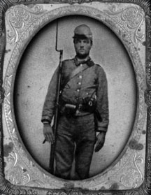

|

NAME: James Henry Norris
BORN: 1844
DIED: 1922
ALLEGIANCE: Confederate
HIGHEST RANK: Private
UNIT: 56th Virginia Infantry Regiment
RECORD: Enlisted in the 88th Regiment, Albemarle
County Militia, on March 17, 1862, and on May 2 was assigned
to the 56th Virginia Infantry Regiment. Fought at the Seven
Days' battles, Second Manassas, Antietam, Fredericksburg and
Gettysburg, where he was captured. Remained a prisoner of
war until he was discharged on June 15, 1865.
|
|
Son of William Norris, James Henry Norris was born on the
family farm near Earlysville, Virginia, on January 7, 1844.
Norris helped his parents on the farm as a youth and,
despite little formal schooling, learned to read and write
proficiently. On March 17, 1862, at the age of 18, Norris
joined the 88th Regiment, Albemarle County Militia. In early
May, he was assigned to Company H of the 56th Virginia
Infantry Regiment, commanded by Colonel William D. Stuart.
Norris' baptism by fire came soon after, in the Seven
Days' campaign, fought June 25 to July 1, 1862. By that
time, the 56th Virginia had been assigned to Brig. Gen.
George E. Pickett's Brigade, Maj. Gen. James Longstreet's
Division, First Corps, Army of Northern Virginia. When
Pickett took command of the division later that year, Brig.
Gen. Richard B. Garnett assumed command of the brigade.
Norris fought with the brigade at Second Manassas, Antietam,
Fredericksburg and Gettysburg, where he was taken prisoner.
At Gettysburg Norris participated in perhaps the most
legendary infantry engagement of the Civil War, the
ill-fated Pickett-Pettigrew-Trimble assault on July 3, 1863.
Intended to crack the Union center, the spectacular
mile-wide assaulting column included Pickett's Division in
its middle. The division's three brigades--Garnett's on the
left, Brig. Gen. James Kemper's on its right, with Brig.
Gen. Lewis A. Armistead to its rear--came under severe
artillery fire near the Emmittsburg Road several hundred
yards from the Union lines. Once over the fence, the
Confederates faced canister and musket fire that "bowled
them over like nine pins," a Union soldier remembered.
Norris told one of his descendants that a shell flew past
him and shredded a soldier standing only a few inches away.
Pickett's brigades struck the Federals posted behind a
stone wall where, according to Union Lt. Col. Frank Haskell,
"flash meets flash, the wall is crossed--a moment ensues of
thrusts, yells, blows, shots, and indistinguishable
conflict," after which the gray wave receded, Confederates
who had not been shot down either retreated or were taken
prisoner. Among the prisoners was James Henry Norris, who
spent the rest of the war in the Union prison camp at Point
Lookout, Md. When he received his discharge on June 15,
1865, he walked all the way back to Albemarle County. Norris
later said that he considered his survival through the July
3 assault and his subsequent imprisonment a miracle.
After the war Norris married, raised a family of two sons
and two daughters, and continued working his family farm.
Despite his early lack of schooling, Norris studied legal
procedures and gained a reputation in the community for
drafting legal documents.
In 1913 Norris attended the 50th Anniversary Reunion of
the Battle of Gettysburg. He wrote home that the weather was
just as hot as it had been during the battle. Outliving many
of his comrades, Norris was laid to rest in 1922 on the farm
he had worked his entire life, in the uniform of the cause
for which he nearly sacrificed it.
Source: Civil War Times Illustrated
44:3 (August 2005), 16.
|